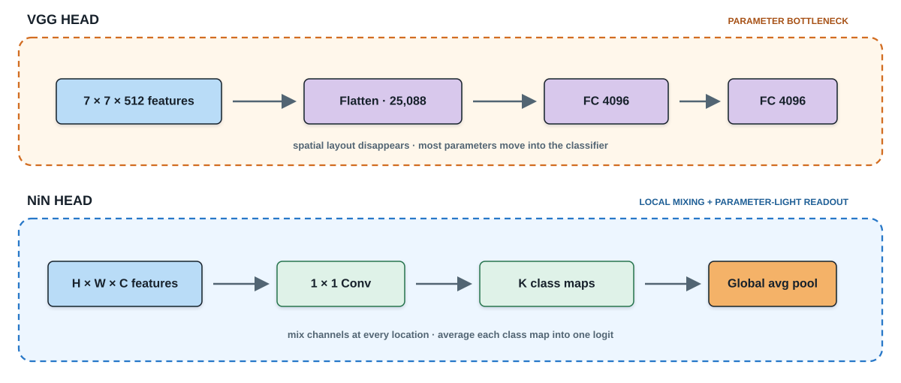
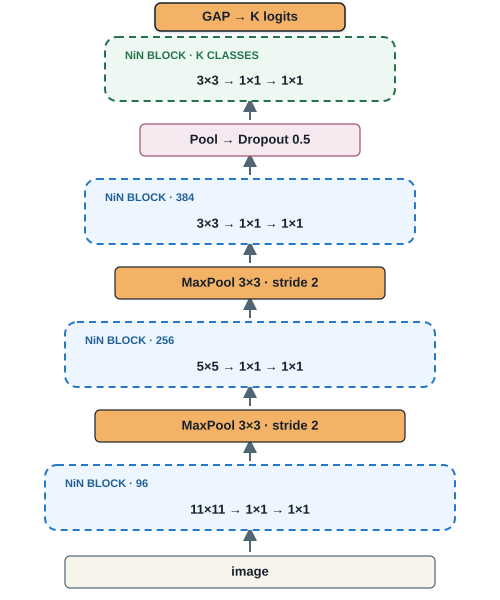

Modern Vision Architectures
Designing depth, information flow, and reuse
Modern Vision Architectures
CHAPTER 08 · LEARNING FROM IMAGES
Designing depth, information flow, and reuse
How can a vision model become deeper and more capable without becoming impossible to optimize or deploy?

The image previews the lecture’s design problem rather than one named architecture. The main path becomes deeper and more abstract; the arc preserves an earlier signal and merges it back later. Ask students what can go wrong as we keep stacking the convolutional blocks from Chapter 7. This lecture studies architectural answers: disciplined repetition, channel mixing, multi-scale branching, residual information flow, dense feature reuse, and task-driven composition.
A first-level map of the lecture
01
Why architecture becomes a design problem
02
Depth through repeated blocks
03
Branching across spatial scales
04
Learning residual corrections
05
Reusing earlier features
06
The architecture toolkit
07
Composing a task-specific network
Keep this roadmap at the level of transferable design ideas. We first establish why a naive chain of convolution and pooling does not scale cleanly: resolution may disappear too quickly, wide kernels and dense heads spend parameters heavily, and deeper chains become harder to optimize. VGG supplies the concrete case for depth through repeated small padded convolutions (Simonyan and Zisserman 2015). ResNet introduces residual addition (He et al. 2016), while DenseNet uses dense concatenation to reuse earlier features (Huang et al. 2017). The final two sections turn the historical architectures into a reusable toolkit, then compose several mechanisms around one task specification.
02 · Depth through repeated small blocks
AlexNet: the reference recipe

READ BOTTOM → TOP Which components repeat—and which design choices keep changing? Convolution and pooling repeat, but kernel sizes shift from \(11\times11\) to \(5\times5\) to \(3\times3\).
Course-made reconstruction of AlexNet from Krizhevsky, Sutskever & Hinton (Krizhevsky et al. 2012). Bar width qualitatively indicates the reduction of spatial resolution.
Let students read the figure before interpreting it. The layer bars deliberately follow the compact graphical grammar of the supplied AlexNet–VGG reference: one bar per operation, a distinct color for pooling, and a bottom-to-top computational path. Ask students to identify the recurring components first. Then reveal the irregularity that VGG will address: AlexNet changes kernel sizes and uses an aggressive stride-four entrance before settling on three-by-three convolutions.
VGG turns architecture design into an experiment
 Original architecture configurations · Table 1
Original architecture configurations · Table 1
RESEARCH QUESTIONCan a deeper, regular stack outperform a shallower sequence of special cases?
Original Table 1 and design analysis from Simonyan & Zisserman (Simonyan and Zisserman 2015). See also the 2024 course chapter.
Introduce VGG as a research program rather than merely a named architecture. The table is the paper’s experimental design: configurations A through E increase learned depth while retaining a disciplined local recipe. Ask students what must remain fixed if depth is the variable of interest. Reveal the three ideas only after their answers. The crucial abstraction is to stop designing every layer as a special case and begin composing repeated blocks.
One VGG block becomes the design unit

def vgg_block(num_convs, out_channels):
layers = []
for _ in range(num_convs):
layers.extend([
nn.LazyConv2d(
out_channels,
kernel_size=3, padding=1
),
nn.ReLU(),
])
layers.append(
nn.MaxPool2d(kernel_size=2, stride=2)
)
return nn.Sequential(*layers)BLOCK CONTRACT\(H\times W\) is preserved inside the plate→pooling returns \(H/2\times W/2\) once
Block design from Simonyan & Zisserman (Simonyan and Zisserman 2015); PyTorch implementation adapted from the instructor’s 2024 course chapter.
Trace the figure and code together from bottom to top. The loop is the plate: it repeats the same spatially preserving operation. Padding one keeps height and width unchanged for every three-by-three convolution. Pooling sits outside the repetition and therefore halves resolution exactly once per block. Ask students which two arguments define a block; the answer is its repetition count and output channel count.
From AlexNet’s sequence to VGG’s grammar

THE ARCHITECTURAL MOVE AlexNet chooses layers one by one. → VGG defines one block, then scales by composition.
Course-made comparison derived from Krizhevsky et al. (Krizhevsky et al. 2012) and Simonyan & Zisserman (Simonyan and Zisserman 2015).
Read the columns in the requested order. Start with the full VGG model on the left: five labeled plates make the repeated organization visible. Move to the center to open one plate and expose its internal contract. End with AlexNet on the right as the reference: it uses the same broad vocabulary of convolution, pooling, and fully connected layers, but its local recipe changes by stage. The conceptual advance is architectural grammar—one reusable unit whose repetition count and channel width specify the network.
The architecture becomes a short specification
arch = ((1, 64),
(1, 128),
(2, 256),
(2, 512),
(2, 512))\((n, C)\)repeat \(n\) convolutions
with \(C\) output channels
1×64 1×128 2×256 2×512 2×512
Five tuples → five calls to vgg_block
class VGG(nn.Module):
def __init__(self, arch, num_classes=10):
super().__init__()
conv_blocks = [
vgg_block(num_convs, out_channels)
for num_convs, out_channels in arch
]
self.net = nn.Sequential(
*conv_blocks,
nn.Flatten(),
nn.LazyLinear(4096), nn.ReLU(), nn.Dropout(0.5),
nn.LazyLinear(4096), nn.ReLU(), nn.Dropout(0.5),
nn.LazyLinear(num_classes),
)
self.net.apply(d2l.init_cnn)TRACE THE ABSTRACTIONconfiguration→block factory→feature extractor→classifier
Configuration A from Table 1 of Simonyan & Zisserman (Simonyan and Zisserman 2015). Implementation adapted from the instructor’s 2024 course chapter.
Begin on the left. Each pair stores only two decisions: how many convolutions the block repeats and how many channels those convolutions produce. Configuration A expands to eight convolutional layers across five blocks; the three fully connected layers produce the name VGG-11. Then trace the list comprehension on the right: each tuple becomes one call to the block factory from the previous slide. The sequential model concatenates the five blocks, flattens once, and attaches the historical VGG classifier. Mention that num_classes is ten here for course datasets; the ImageNet paper used one thousand outputs.
VGG’s legacy—and its unfinished business
Synthesis based on Simonyan & Zisserman (Simonyan and Zisserman 2015).
Ask students to supply one item in each column before revealing the drawbacks. VGG’s durable contribution is a regular block grammar built from small padded convolutions and deliberate pooling. Its original implementation still carries a huge fully connected classifier, and the feature extractor is a plain sequential chain. The compute cost also remains high because every block applies dense spatial convolutions. Use the final bridge to motivate NiN without claiming that NiN solves optimization at extreme depth.
NiN fixes what VGG leaves expensive
LIN · CHEN · YAN · ICLR 2014 Network in Network Replace a linear local filter with a tiny network—and remove the dense classifier.

NiN motivation and global-average-pooling design from Lin, Chen & Yan (Lin et al. 2014). Framing follows the instructor’s 2024 course chapter.
Start from VGG’s remaining problems, not from the NiN name. Flattening destroys the spatial arrangement and feeds a very large dense classifier. Yet inserting a standard fully connected layer earlier would also destroy spatial structure. NiN’s first move is a one-by-one convolution: at each pixel location it applies the same learned channel transformation, behaving like a shared fully connected layer without mixing locations. Its second move is global average pooling. The last block produces one spatial map per class; averaging each map yields its class logit. Ask students to point to the two places where parameters disappear.
A NiN block learns within each location

def nin_block(
out_channels, kernel_size,
stride=1, padding=0
):
return nn.Sequential(
nn.LazyConv2d(
out_channels, kernel_size,
stride=stride, padding=padding
),
nn.ReLU(),
nn.LazyConv2d(out_channels, 1),
nn.ReLU(),
nn.LazyConv2d(out_channels, 1),
nn.ReLU(),
)AT EACH \((h,w)\)channel vector \(\mathbf{x}_{h,w}\)→shared MLP→richer channel vectorSpatial positions remain distinct.
MLPConv block from Lin, Chen & Yan (Lin et al. 2014).
Read the plate from bottom to top. The first convolution performs the usual spatial extraction and may change resolution. The following one-by-one convolutions do not look at neighboring pixels; they transform the channel vector at each location with shared weights. ReLU after every convolution turns the sequence into a small multilayer perceptron applied across channels. Contrast this with VGG: VGG repeats spatial three-by-three convolutions, whereas NiN follows one spatial convolution with two channel-mixing convolutions.
NiN ends with class maps—not a dense head

ONE MAP PER CLASS\(z_k = \dfrac{1}{HW}\sum_{h,w} A_{h,w,k}\)Evidence for class \(k\) is averaged across all locations.
VGG:features → flatten → large dense head→NiN:class maps → global average → logits
Course-made reconstruction of NiN from Lin, Chen & Yan (Lin et al. 2014).
Build from the image upward. The first three blocks retain AlexNet-like spatial kernel sizes—eleven, five, then three—but each becomes a NiN block by adding two one-by-one transformations. Pooling follows those blocks. The final NiN block outputs num_classes channels, so each channel can be interpreted as a class evidence map. Adaptive average pooling reduces each map to one number, and flattening produces the logits. This removes the two 4096-unit fully connected layers. Emphasize the tradeoff: far fewer classifier parameters, but the model must learn spatial maps whose averages are directly predictive.
The complete NiN module mirrors the figure

class NiN(nn.Module):
def __init__(self, num_classes=10):
super().__init__()
self.net = nn.Sequential(
nin_block(96, 11, stride=4),
nn.MaxPool2d(3, stride=2),
nin_block(256, 5, padding=2),
nn.MaxPool2d(3, stride=2),
nin_block(384, 3, padding=1),
nn.MaxPool2d(3, stride=2),
nn.Dropout(0.5),
nin_block(num_classes, 3, padding=1),
nn.AdaptiveAvgPool2d((1, 1)),
nn.Flatten(),
)
self.net.apply(d2l.init_cnn)LAST THREE LINES\(K\) class maps→average each map to \(1\times1\)→flatten to \(K\) logits
Implementation adapted from the instructor’s 2024 course chapter and Lin, Chen & Yan (Lin et al. 2014).
Map each code line to the compact trace. The first three NiN blocks use the same spatial kernel sizes and output channels described on the previous slide, with max pooling after each block. Dropout regularizes the final feature representation. The last NiN block has num_classes output channels, producing one evidence map per class. AdaptiveAvgPool2d forces every map to one-by-one regardless of the incoming spatial size, and Flatten converts the K scalar averages into the classifier output. We omit the learning-rate argument and save_hyperparameters because this class is a plain torch module; training configuration belongs outside the architecture.
NiN changes both the block and the head
Synthesis based on Lin, Chen & Yan (Lin et al. 2014).
Retrieve the two NiN fixes first: local channel-wise nonlinear transformations and a parameter-light global-average-pooling head. Then ask what NiN still forces the designer to choose. Each spatial stage selects one kernel size and follows one path. Its early architecture also retains AlexNet-like wide kernels and aggressive pooling. The final class-map contract is elegant but restrictive: the representation must align channels with labels before averaging. This leads naturally to Inception’s parallel multi-scale paths.
03 · Branching across spatial scales
One input—four receptive-field choices
SZEGEDY ET AL. · CVPR 2015Going Deeper with ConvolutionsInstead of choosing one kernel size, let the block learn from several scales in parallel.

Course-made Inception diagram based on Szegedy et al. (Szegedy et al. 2015).
Ask students to choose a kernel size before revealing the full diagram. The Inception answer is not to choose: the input is sent through four parallel paths. The one-by-one branch captures channel interactions, the three-by-three and five-by-five branches see different spatial extents, and the pooling branch summarizes local context. All branches preserve height and width through stride one and appropriate padding, which makes concatenation possible. Concatenation increases channels; it does not add the branch tensors elementwise.
The \(1\times1\) layers are capacity valves
Dimension-reduction rationale from Szegedy et al. (Szegedy et al. 2015).
Use the five-by-five branch to explain why the one-by-one convolution appears before wider kernels. A direct five-by-five convolution costs twenty-five times input channels times output channels. Reducing first to Cr channels changes the cost to Cin times Cr plus twenty-five times Cr times Cout. The one-by-one layer is therefore a learned capacity valve. It also adds a nonlinearity. Ask students what happens as Cr approaches Cin: the saving disappears.
The diagram becomes an Inception module
class Inception(nn.Module):
def __init__(self, c1, c2, c3, c4):
super().__init__()
self.b1 = conv_relu(c1, 1)
self.b2 = nn.Sequential(
conv_relu(c2[0], 1),
conv_relu(c2[1], 3, padding=1))
self.b3 = nn.Sequential(
conv_relu(c3[0], 1),
conv_relu(c3[1], 5, padding=2))
self.b4 = nn.Sequential(
nn.MaxPool2d(3, stride=1, padding=1),
conv_relu(c4, 1))
def forward(self, x):
ys = [branch(x) for branch in
(self.b1, self.b2, self.b3, self.b4)]
return torch.cat(ys, dim=1)torch.cat(…, dim=1)→channels sum
Simplified PyTorch implementation based on Szegedy et al. (Szegedy et al. 2015) and the instructor’s 2024 course chapter.
The helper conv_relu denotes a convolution followed by ReLU and keeps the code focused on branch topology. Match b1 through b4 to the four lanes in the figure. Each branch receives the same x. Because padding preserves height and width, torch.cat can join the outputs along dimension one, the channel dimension in NCHW tensors. Ask students to compute the output channel count: c1 plus c2[1] plus c3[1] plus c4.
Once understood, compress the block

Course-made compressed GoogLeNet diagram based on Szegedy et al. (Szegedy et al. 2015). The original network also used auxiliary classifiers during training.
Now that students understand the internal four-branch structure, replace it with one compact green symbol. GoogLeNet uses nine Inception blocks arranged into groups of two, five, and two, with max pooling between groups. The stem performs early image ingestion; the body performs multi-scale processing; the head uses global average pooling, inherited conceptually from NiN, before classification. Mention that the original paper included auxiliary classifiers to stabilize training, but the simplified course implementation omits them because modern training recipes make them less essential.
Nine blocks become one GoogLeNet class
class GoogLeNet(nn.Module):
def __init__(self, num_classes=10):
super().__init__()
pool = lambda: nn.MaxPool2d(3, 2, 1)
self.stem = nn.Sequential(
conv_relu(64, 7, stride=2, padding=3), pool(),
conv_relu(64, 1), conv_relu(192, 3, padding=1), pool())
self.body = nn.Sequential(
Inception(64, (96,128), (16,32), 32),
Inception(128, (128,192), (32,96), 64), pool(),
Inception(192, (96,208), (16,48), 64),
Inception(160, (112,224), (24,64), 64),
Inception(128, (128,256), (24,64), 64),
Inception(112, (144,288), (32,64), 64),
Inception(256, (160,320), (32,128), 128), pool(),
Inception(256, (160,320), (32,128), 128),
Inception(384, (192,384), (48,128), 128))
self.head = nn.Sequential(
nn.AdaptiveAvgPool2d((1,1)), nn.Flatten(),
nn.Dropout(0.4), nn.LazyLinear(num_classes))
def forward(self, x):
return self.head(self.body(self.stem(x)))stem→body: 2 + 5 + 2 blocks→head: GAP + classifier
Simplified GoogLeNet without auxiliary classifiers, based on Szegedy et al. (Szegedy et al. 2015).
Keep the compressed figure visible while reading the class. The stem performs early downsampling and reaches 192 channels. The body contains exactly nine Inception calls: two before the first pool, five before the second, and two at the final resolution. Each constructor tuple allocates output channels across the four branches. The head compresses each channel to one spatial value, flattens, applies dropout, and learns the final class projection. The forward method exposes the persistent stem–body–head pattern. This simplified teaching implementation omits the original auxiliary classifiers.
GoogLeNet gains scale diversity—at a cost
Synthesis based on Szegedy et al. (Szegedy et al. 2015).
Have students name the benefit of each branch before showing the drawbacks. GoogLeNet makes multi-scale processing explicit and uses one-by-one reductions to allocate capacity economically. Once compressed, the Inception symbol supports a modular nine-block body. The cost is architectural complexity: many branch widths must be hand tuned, parallel paths are less straightforward to schedule, and the original model used auxiliary classifiers during training. Close on the remaining information-flow problem, which prepares the residual-learning section without teaching it yet.
04 · Learning residual corrections
 Plain networks on CIFAR-10 · He et al., Figure 1
Plain networks on CIFAR-10 · He et al., Figure 1
The deeper plain network has higher training error—not merely higher test error.
Extra depth created an optimization problem: the added layers failed even to learn an identity mapping.
Original experimental curves reproduced from He et al. (He et al. 2016), Figure 1.
Begin with the apparently obvious claim: a deeper model contains enough capacity to imitate the shallower one by making the extra layers identities. Ask students to predict the 56-layer training curve. Reveal that it is worse than the 20-layer curve. Because the failure already appears in training error, this is not the usual overfitting story. He et al. call it the degradation problem. The architecture needs to make “do nothing” easy before depth can become reliably useful.
Learn the correction—not the whole transformation

Course-made diagram based on the residual building block in He et al. (He et al. 2016).
Trace the two routes with a finger. The main path learns a correction F(x); the shortcut transports x unchanged. Addition is elementwise, so shape compatibility is a hard interface contract. Ask what happens if all convolutional weights produce zero: the block becomes an identity after the final activation. The important claim is not that gradients magically avoid every difficulty, but that residual parameterization provides a short information and gradient route and makes the identity solution accessible.
One block, two shortcut policies
projection = NoneReuse \(x\) directly.
Conv2d(1×1)Align channels and resolution.
class ResidualBlock(nn.Module):
def __init__(self, in_ch, out_ch,
stride=1, use_projection=False):
super().__init__()
self.main = nn.Sequential(
nn.Conv2d(in_ch, out_ch, 3, stride,
padding=1, bias=False),
nn.BatchNorm2d(out_ch), nn.ReLU(),
nn.Conv2d(out_ch, out_ch, 3,
padding=1, bias=False),
nn.BatchNorm2d(out_ch))
self.shortcut = (
nn.Conv2d(in_ch, out_ch, 1, stride,
bias=False)
if use_projection else None)
def forward(self, x):
identity = x if self.shortcut is None \
else self.shortcut(x)
return F.relu(self.main(x) + identity)Teaching implementation of the basic residual block from He et al. (He et al. 2016).
Keep the code as the principal content. The main branch is identical in both cases; only the shortcut policy changes. With stride one and equal channel counts, use_projection stays false and identity is exactly x. At a stage boundary, the caller sets stride two and enables the one-by-one projection. Point out that both paths then downsample consistently before addition. This explicit flag makes the architectural decision visible to students.
Addition imposes a shape contract

ResidualBlock(64, 64)H × W × C stays fixed · zero shortcut parameters
ResidualBlock(64, 128, stride=2, use_projection=True)H and W halve · channels double · learned alignment
Course-made comparison based on the shortcut options in He et al. (He et al. 2016).
Ask students to decide which shortcut the two constructor calls require before revealing the design rule. Addition requires identical H, W, and C. Inside a stage, the residual branch preserves shape and the free identity shortcut is preferable. At a stage transition, stride two changes spatial resolution and the output channel count grows, so a one-by-one convolution applies the same stride and learns the necessary channel projection. Contrast this with concatenation: addition preserves the channel count rather than stacking both representations.
05 · Reusing every feature with DenseNet

\(H_4\) receives \([x_0,x_1,x_2,x_3]\) directly.
Features remain distinguishable because DenseNet concatenates them.
Original Figure 1 from Huang et al. (Huang et al. 2017). Densely Connected Convolutional Networks.
Let students inspect the colored curves before naming the mechanism. Ask them to list the inputs of H4. A plain chain would supply only x3; the dense block supplies x0 through x3. The paper’s figure uses growth rate k=4: each layer contributes only four new feature maps, but all earlier maps remain available. Make the paper link explicit so students can trace the architecture to its primary source.
A dense layer appends—it does not replace

Course-made diagram based on Huang et al. (Huang et al. 2017).
Build the equations from the picture rather than presenting them first. Each layer reads the concatenated feature history and contributes k new maps. The channel count therefore grows linearly within a dense block. Contrast this with ResNet’s addition: ResNet merges two same-shaped tensors into one state, whereas DenseNet preserves separate feature maps and makes them jointly visible downstream.
Watch the feature bank grow
Ask for the final width before advancing. Reveal one dense layer at a time and make students update the running channel count aloud. The key is that a layer does not output the entire wider state from scratch: it computes only k new maps, then concatenation carries the existing bank forward. With C0 equal to eight, growth rate four, and four layers, the output contains twenty-four channels.
Cool the representation before it grows again
Transition compression and dropout follow the DenseNet training variants in Huang et al. (Huang et al. 2017).
Use “cooling” as a visual metaphor, then make the mechanisms precise. The transition layer first uses a one-by-one convolution to reduce channels by compression factor theta, then average pooling halves the spatial resolution. This controls representation size and computation. It is not identical to regularization: dropout directly combats co-adaptation by randomly masking newly produced features during training. The paper reports dropout for several small-dataset experiments; data augmentation is a complementary data-side intervention rather than a connectivity mechanism.
The implementation mirrors the equation
\(C_{out}=C_0+Lk\)
torch.cat is the architectural operation.
class DenseLayer(nn.Module):
def __init__(self, in_ch, growth_rate):
super().__init__()
self.transform = nn.Sequential(
nn.BatchNorm2d(in_ch), nn.ReLU(),
nn.Conv2d(in_ch, growth_rate, 3,
padding=1, bias=False))
def forward(self, x):
new_features = self.transform(x)
return torch.cat([x, new_features], dim=1)
def dense_block(in_ch, num_layers, k):
layers = []
for i in range(num_layers):
layers.append(DenseLayer(in_ch + i * k, k))
return nn.Sequential(*layers)dense_block(64, 4, 32)→64 + 4 × 32 = 192 output channels
Compact teaching implementation based on Huang et al. (Huang et al. 2017).
Have students predict the output channel count before revealing the numerical check. DenseLayer receives the accumulated tensor, creates k new maps, and concatenates them with the input along dimension one. Sequential works because each DenseLayer returns the enlarged collective state. The constructor’s in_ch plus i times k is exactly the channel-growth equation translated into code.
Feature reuse buys efficiency—but stores activations
Synthesis based on Huang et al. (Huang et al. 2017). Original paper ↗
Ask students to name one benefit and one cost before revealing the right column. Dense connectivity supports feature reuse, short gradient paths, and narrow per-layer contributions. Its main systems cost is activation memory and data movement: earlier features must stay available and the concatenated state grows. Transition layers—typically one-by-one convolution followed by average pooling—control this growth between dense blocks. Close by comparing the combination operators: addition and concatenation express different information-preservation policies.